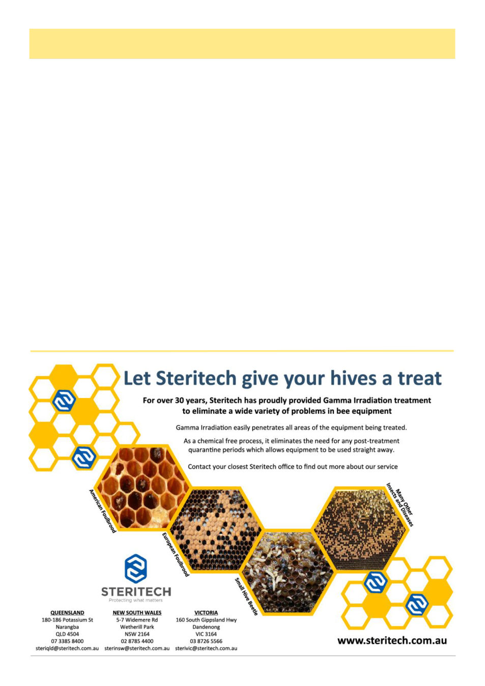

When Will Those Trees Flower?, cont’d
August 2026
25
on it.
This is called supra-annual masting. Supra-annual means less frequently than once a year, and “masting” is
heavily synchronized flowering/seeding at a variable interval.
Why do flowering plants do this? There’s two theories:
Predator satiation – basically to overwhelm the ability of predators to consume all the flowers or seeds before
they can germinate. We’re not used to thinking of predators of seeds but consider the most prominent old-world
mast-flowering plant – the oak. Squirrels, famously, and many other animals, love to eat their seeds (acorns), so
they practice supra-annual masting to overwhelm the ability of animals to eat all their seeds – though squirrels re-
spond with hoarding. Here in Australia this is less an issue, gumnuts are generally small and granivorous animals
such as cockatoos do eat them but surprisingly the real threat is harvester ants which can take and consume signifi-
cant portions of fallen gumnuts;
Pollination efficiency – you know flowers need to be pollinated, and they need to be pollinated by the same kind
of plant as themselves (a “conspecific”). If there’s an overwhelming number of the same species in an area that’s
more likely to happen. But usually plants find other means of ensuring pollination by conspecifics or a simple pat-
tern of always flowering at the same time every year is usually enough to accomplish this. But what’s unique about
Australia is a lot of the pollinators - lorikeets, honeyeaters, flying foxes - are migratory. Flying foxes exercising
“facultative latitudinal migration” migrate 45 km a day.2 Basically the pollinating animals do as the beekeepers do
and follow the flow, but they have countless generations of instincts telling them where to go.
What Triggers Masting?
It seems it is not simple. There are seven factors that feed into whether one of these trees flower (then we’ll deal
with how they get in sync).3
Vernalization – prolonged cold ambient temperatures switch off a repressor gene (which is there to prevent
flowering before winter);
Autonomus pathway – this is a set of genes that put automatic pressure towards flowering that triggers flowering
if there are not sufficient repressors against it;
Photoperiod – day length cues;
(Continued from page 24)
(Continued on page 26)